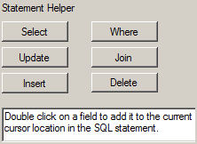
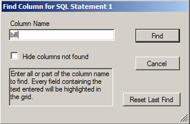
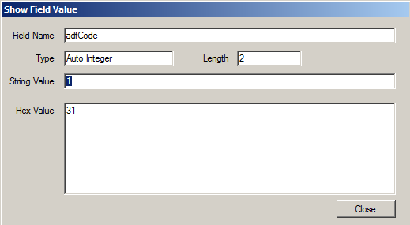

Advanced Use
This section describes advanced features of the View SQL utility.
Using the Statement Helper
The Statement Helper buttons can be used when manually creating a SQL statement. Double click on one of the statement helper buttons to add the choice to the SQL statement that you are creating.

- Select: adds “Select * From” to the SQL Statement window
- Update: adds “Update Set” to the SQL Statement window
- Insert: adds “Insert Into (FIELDNAMES) Values (THEDATA)” to the SQL Statement window. Replace “FIELDNAMES” with the fieldname you wish to insert into. Replaced “THEDATA” with the data you wish to insert
- Where: adds a “Where” clause to the SQL Statement
- Join: brings up the Join Builder window, used to link tables. From the left most area, pick the table you wish to join the primary table to; from the center, pick the parent table field; from the right, pick the child table field. Press the OK button to return to the main screen, or press Cancel to cancel out of this screen
- Delete: If a table has been selected from the Table list, pressing Delete adds “Delete From (Selected Table) Where” to the SQL Statement window, with the selected table appearing in the statement
In addition, double clicking on a table in the table list will add “Select * From (Table)” to the SQL Statement area. You can add individual fields in the same way, by double clicking on the field in the field list.
Using the Find Column Feature
With data present on the Data Grid, you can use the Find Column feature to find and tag columns on the Data Grid. This feature is accessible from the Data menu, or can be opened by pressing Ctrl-C.

For example, to find and tag all columns that contain the word “bill”, type “bill” in the “Column Name” field then click on “Find”. All column names that contain the word “bill” will appear highlighted in the Data Grid.
If you check the “Hide columns not found” checkbox, then all other columns will be hidden. To reset the tagged fields you can either select the Main Menu option of “Data->Reset Columns” or you can access the Find Column window again and click on the “Reset Last Find” button. Any columns that were tagged or hidden will now be displayed normally.
Viewing Field Values on the Data Grid
With results in the Data Grid, you can double click on the Field to view additional information about the field. The information shown includes: Field Name, Type, Length, String Value, and Hex Value.

Exporting Data from the Data Grid
Data from the Data Grid can be exported in a comma-delimited format with a double quote text qualifier, and opened in Notepad, Excel, or other programs.
Follow these steps to export the data from the Data Grid:
Step 1: With results in the Data Grid, press the Data button.
Step 2: From the Data menu, press the Export button.
Step 3: A Browse window will appear. Browse to the location where you wish to save the file, and enter a filename in the Filename area of the Browse window. After entering the filename, press Save.
Step 4: After pressing Save, a question will appear that asks if you want to save the column names in the first row.
- Answer yes to include the column names (Including the column names can make the data easier to use when viewing it in an external program.)
- Answer no to exclude the column names.
After saving, retrieve the file from the save location.